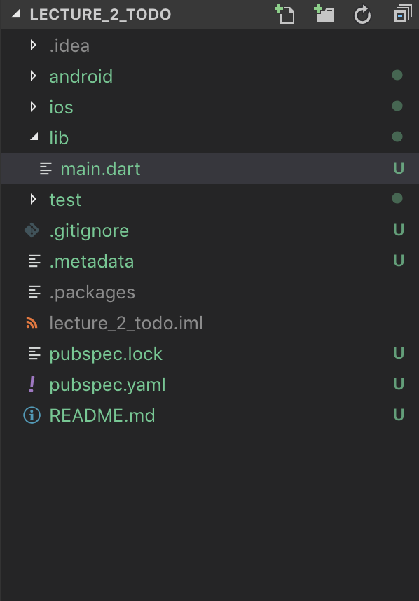
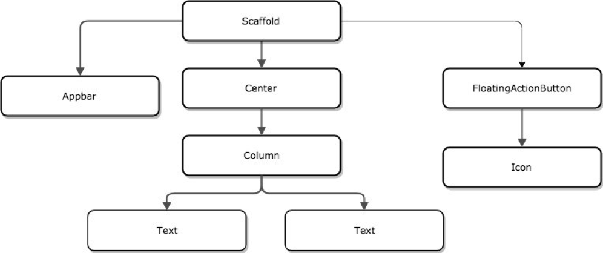

Flutter project contains several main folders:
android - contains necessary info for building an application for Android.ios - contains necessary info for building an application for iOS.test - contains code for tests in the application. Keeping all code for tests in one place allows us to simply navigate between app code and tests code.lib - contains application code. The main folder in development.Later in this course, we will check content in android and ios folders and add tests to test folder.
Our development process starts from main.dart file in lib folder.
All our code will be located in subfolders of lib folder. A best practice is creating folders for grouping elements in some way. That's why with the growing of app we will get different folders for screens in an app, some tools, models, etc. It will be understandable step by step.
Let's look at the generated project. Open main.dart file. Here we can see main method which creates an instance of class MyApp.
MyApp extends StatelessWidget and we should start from understanding what is Widget in Flutter.
Widget - is everything in Flutter...
Widget is the smallest and the biggest part of the application. Widget contains widgets and can be part of another widget.
Application is a widget. Each screen in the app is a widget. Each element on the screen is a widget. Text is a widget, a button is a widget, image is a widget, etc.
Shortly, Widget is a regular Dart class.build method is very important for Widget. StatelessWidget contains build in class declaration:
class TheCoolestWidget extends StatelessWidget {
@override
Widget build(context) {
return Text('Cool text');
}
}
As you can see in the example - build method returns another widget Text.
Text is one of the basic Flutter widgets. This widget lets us create styled text within our application.
As a result - our screens is a big tree from widgets.

If a widget is a class, it means that we can easily add properties and methods.
class TheCoolestWidget extends StatelessWidget {
// a property
final String coolText;
// a constructor
TheCoolestWidget(this.coolText);
Widget build(context) {
return Text(coolText);
}
}
As a result, we can add our new widget:
/// ...
/// Somewhere in another widget
child: TheCoolestWidget('Cool text'),
/// ...
In the previous part, our widget is extend of StatelessWidget. Stateless widget cannot redraw itself in the case when his property of any condition changes. In this case, the app should always draw a new widget instead of the old one.
It is good for small widget as Text or Image. A good rule, in this case, does not add any business logic to stateless widget.
If widget never changes - it is stateless widget!
But when we create complex UI in an application we often have a situation when it should react to different events such as user actions, etc. For this case, we should use Stateful widget.
The previous code shows how to create stateless widget. Stateful widget is a complex object from 2 classes. First one is widget class - extension class to StatefulWidget class. The second one is State - additional object for keeping widget parameters and build a widget. In this case, our build method migrate from widget class to state class.
class TheCoolestWidget extends StatefulWidget {
@override
State<StatefulWidget> createState() {
return _TheCoolestWidgetState();
}
}
class _TheCoolestWidgetState extends State<TheCoolestWidget> {
@override
Widget build(context) {
return new Text('Cool text');
}
}
As we can see - build method is the same but now it is located in state class. Additionally, we have new method createState() in our widget class. Good practice keep Widget's class and state's class in one file. Additionally, start state name from _, after Widget's name and State end.
At current step - functionality for Statefull and Stateless widget look the same. For going deeper we should look at the standard widget catalog and found widget for creating user interaction handling in our app.
Getting this base knowledge it is high time to review standard widgets.
Widget catalog the main catalog for standard widgets. Here we can find:
As a developer, we should understand that Google material design and Apple design have a little bit different concepts in some cases. It is better to start from reviewing design guidelines for iOS and for Android:
todo_list_widget.dart we create our widget. We should start by selecting between stateless and stateful variants. For it, we analyze our target. We want to have a list of our todo actions and ability to create a new one. For just showing the list of actions we can use stateless widget but when we speak about the ability to add a new one - it is changing the state of data in the app. That's why we need stateful solution.class TodoList extends StatefulWidget {
@override
State<StatefulWidget> createState() {
return TodoListState();
}
}
class TodoListState extends State<TodoList> {
@override
Widget build(BuildContext context) {
return Container();
}
}
List<String> items = ['Item 1', 'Item 2', 'Item 3'];
Scaffold widget and add to AppBar title of application as a title for this page. And we add some text for the body to check how it works:@override
Widget build(BuildContext context) {
return Scaffold(
appBar: AppBar(title: Text("Todo list")),
body: Text("Test text")
);
}
main.dart file. Remove all generated code from that file and put our widget to home parameter. Do not forget to import our widget file to main.dart:class MyApp extends StatelessWidget {
// This widget is the root of your application.
@override
Widget build(BuildContext context) {
return MaterialApp(
title: 'Todo List',
theme: ThemeData(
primarySwatch: Colors.blue,
),
home: TodoList(),
);
}
}
Scaffold:Widget _buildList() {
return Containter();
}
ListView. Unexpectedly... indeed. After a little research in ListView documentation we understand that we need builder. We build our items as just Text widgets with Padding:Widget _buildList() {
return ListView.builder(
itemCount: items.length,
itemBuilder: (BuildContext ctxt, int index) {
return ListTile(title: Text(items[index]));
}
);
}
floatingActionButton parameter. Use our previous style and move button action to separate method:@override
Widget build(BuildContext context) {
return Scaffold(
appBar: AppBar(title: Text("Todo list")),
body: _buildList(),
floatingActionButton: FloatingActionButton(
onPressed: () => _addNewItem(context),
tooltip: 'Add',
child: Icon(Icons.add),
)
);
}
_addNewItem(BuildContext context) { }
setState for it:_addNewItem(BuildContext context) {
setState(() {
items.add('New item');
});
}
Navigator but will discuss it later in this course._addNewItem(BuildContext context) {
showDialog(
context: context,
builder: (context) {
return AlertDialog(
title: Text('Write new action todo'),
actions: <Widget>[
FlatButton(
child: Text('CANCEL'),
onPressed: () {
Navigator.of(context).pop();
},
),
FlatButton(
child: Text('Add'),
onPressed: () {
Navigator.of(context).pop();
},
)
],
);
}
);
}
setState in Add action to update our widget state. And we clear text in our _textFieldController for showing clear field each time when user press Add:TextEditingController _textFieldController = TextEditingController();
_addNewItem(BuildContext context) {
showDialog(
context: context,
builder: (context) {
return AlertDialog(
title: Text('Write new action todo'),
content: TextField(
controller: _textFieldController,
decoration: InputDecoration(hintText: 'Todo action'),
),
actions: <Widget>[
FlatButton(
child: Text('CANCEL'),
onPressed: () {
Navigator.of(context).pop();
},
),
FlatButton(
child: Text('Add'),
onPressed: () {
setState(() {
if (_textFieldController.text.length > 0) {
items.add(_textFieldController.text);
_textFieldController.clear();
}
});
Navigator.of(context).pop();
},
)
],
);
}
);
}
Looks like the app is done. But...
Each app always can be improved. It can be improved in hundreds of ways. Let's start on our todo list.
Please, add the ability to remove an item from the list. Do it as you want.
We suggest choosing one of the variants:
Additionally, you can try to update UI for items. It can be borders, different fonts, etc. Just start exploring widget catalog. You can customize our ListTile for creating more friendly item UI.
Good luck!